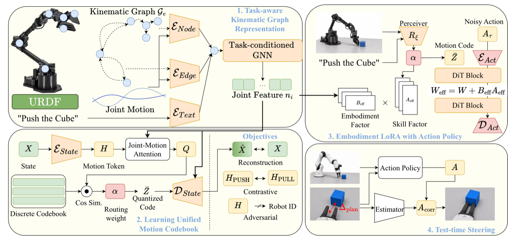
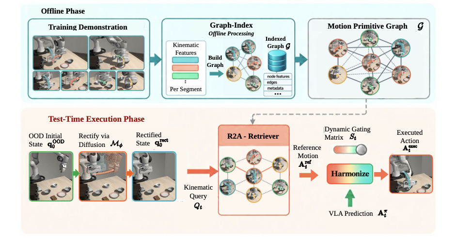
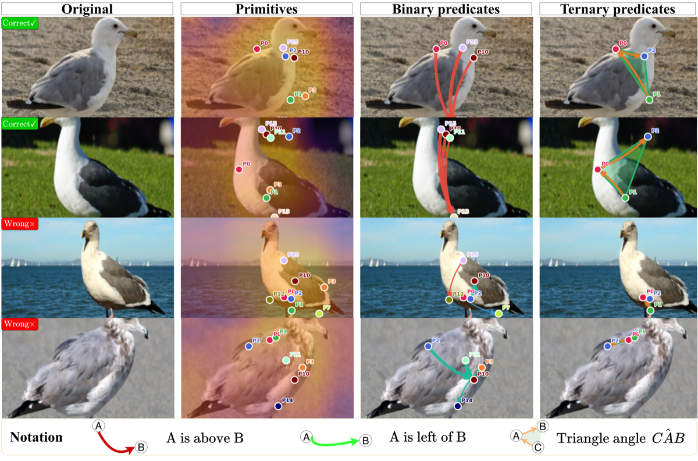
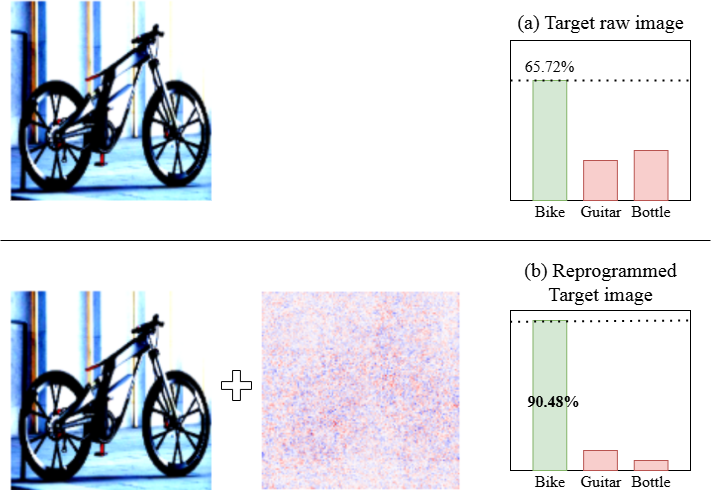

Duy Nguyen
Research Assistant, Center for AI Research (CAIR) · VinUniversity
Short bio
I am a Research Assistant at the Center for AI Research (CAIR), VinUniversity, where I work on Vision-Language-Action (VLA) models for robotics.
I am broadly interested in computer vision systems that stay reliable when the world shifts underneath them. That started with domain adaptation and domain generalization, and has grown into cross-embodiment VLA: learning representations that transfer across robots with different bodies, so a policy does not have to be retrained for every new hardware configuration.
A thread running through these works is a reliable structure — from spatial relations that each object possess in ordinary image classification, to action primitives that each task required although executed by different policy/hardware — carrying the part of a task that pixels alone generalize badly on.
I hold a B.S. in Business Analytics from Hanoi University of Science and Technology, graduated with high distinction, with one of the top 5 GPAs in my cohort.
Research interests
- Generalization VLA problems (cross-embodiment learning, sim2real adaptation, continual learning)
- Domain adaptation and domain generalization
- Neuro-symbolic systems and parameter-efficient systems
News
-
Two submissions to ICLR’26 are under review: Retrieve to Act, on motion primitive graph retrieval for robust VLA execution, and CRISP, on domain generalization through spatial relation induction.
-
Joined the Center for AI Research (CAIR), VinUniversity, as a Research Assistant, working on cross-embodiment VLA.
-
Graduated from HUST with a B.S. in Business Analytics, GPA 3.7/4.0 — high distinction, among the top 5 GPAs in the cohort.
-
Started as an AI Engineer at WIGIN, LLC (remote), working on neural video super-resolution and compression.
-
Best Paper Award at the BIGDAS 12th Conference for Rethinking Top Probability from Multi-view for Distracted Driver Behaviour Localization.
Project demos
|
 |
MoGraM (in progress) Motion-aware Graph-routed Motif for cross-embodiment action learning. Each robot is a kinematic graph carrying the joint trajectories of a demonstration; that context routes embodiment-agnostic motion tokens into a codebook of action primitives, and a flow-matching policy is adapted per robot by a graph-routed mixture of embodiment LoRAs (E-LoRA). |
|
 |
Retrieve to Act (under review, ICLR '26) Motion primitive graph retrieval for robust VLA execution: demonstrations are structured into an offline spatiotemporal graph, and a query-dependent GNN localizes the robot’s ongoing execution within it to retrieve compatible future primitives. code · paper · project |
|
 |
CRISP (under review, ICLR '26) Domain generalization through spatial relation induction over visual primitives — recognition is factored into domain-invariant structural programs and domain-specific primitive detectors. code · paper |
|
 |
VirDA (TMLR '25) A lightweight UDA method that manipulates the input via textural pixel-wise masks rather than retraining backbones; achieves competitive accuracy with a fraction of the trainable parameters. code · paper |
Selected Publications
-
Preprint '26Retrieve to Act: Motion Primitive Graph Retrieval for Robust VLA Execution Under review at ICLR '26.
-
Preprint '26CRISP: Domain Generalization through Spatial Relation Induction over Visual Primitives Under review at ICLR '26.
-
BIGDAS '24Rethinking Top Probability from Multi-view for Distracted Driver Behaviour Localization Best Paper Award.
-
MediaEval '24Beyond Keywords: ChatGPT’s Semantic Understanding for Enhanced Media Search